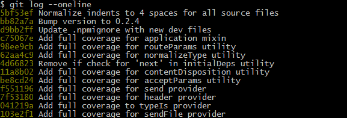

Для добавления файлов в локальное хранилище в Git используется несколько команд:
git add - добавление файлов в стадию ожидания;git commit - добавление файлов в локальное хранилище;git rm - отмена действий.Для отслеживания статуса всех файлов необходимо использовать команду git status.
Это одна из важнейших команд, так как система отслеживает изменения, а с ее помощью мы узнаем о результатах этого отслеживания. Если мы наберем git status в терминале, то система должна выдать следующее:
$ git status
On branch master
Initial commit
Untracked files:
(use "git add ..." to include in what will be committed)
hello.txtПеред добавлением файлов в локальное хранилище их необходимо подготовить. Для этого используется команда git add.
Через команду можно указать какие файлы необходимо добавить. Можно добавить всё, прописав git add . или git add -A, а также можно добавлять лишь некоторые файлы. Для их выбора можно воспользоваться различными командами:
После подготовки файлов их необходимо отправить в локальное хранилище (выполнить коммит). Для этого используется команда git commit -m "Комментари".
При коммите данных их необходимо комментировать, чтобы в дальнейшем каждое изменение в проекте было с комментарием (описанием действий).
Если вы добавили файлы в стадию ожидания, но передумали и не хотите добавлять некоторые из них, то вам пригодиться команда git rm -cached "file".
В ней укажите какой файл необходимо «выкинуть» из стадии ожидания на коммит.
Git имеет встроенную функцию .gitignore, с помощью которой мы можем предотвратить случайное попадание в git add ненужных файлов, папок и директорий. Очень часто в такой перечень попадают следующие данные:
Работает функция .gitignore очень просто:
*.log
build/
node_modules/
.idea/
my_notes.txtСлэш обозначает игнорирование директорий и всего их содержимого, звездочка – шаблон.
В Git есть замечательная возможность «возвращения во времени»:
Чтобы просмотреть проект на стадии какого-либо коммита вам необходимо прописать команду git checkout id, где id это идентификатор коммита, который хотите просмотреть.
Чтобы узнать id изначально пропишите команду git log --oneline. Тогда вы получите список всех коммитов что были сделаны в вашем проекте, а также их идентификаторы.

Чтобы просмотреть какой-либо коммит выполните комманду: git checkout 102e2f1. Здесь вы просмотрите проект на стадии первого коммита.
Для отмены коммита используйте команду git revert id, где id это идентификатор коммита, который хотите просмотреть. После выполнения команды вы отмените определенный коммит.
Для удаления коммита используйте команду git reset id --hard, где id это идентификатор коммита, который хотите просмотреть. После выполнения команды вы удалите определенный коммит и все данные будут возвращены к проекту что был на стадии коммита.